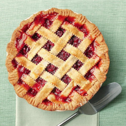

Easter Egg Hunt ● April 20th
All children ages 0-16 are welcome to come hunt for Easter eggs at our garden. Eggs provided but baskets must be brought. Children under the age of 8 must be accompanied by an adult at all times. Only outdoor areas will be used during event.
Public Seminar "Aloe Vera: Newly found health benefits ● May 3rd
Dr. Brock O. Lee will be giving a seminar about the newly discovered potential health benefits of the aloe vera plant. It is sheduled for 7pm on May 3rd (time subject to change). Admittence is free for all students. Non-students must pay a $5 entree fee.
Closed to public ● June 12th
Maintenance day. Facilities will be closed to tbe public. Only members will be allowed entree.
Pie Eating contest ● June 29th
Our annual pie eating contest. Entry is $7. Must be 16 or older to enter.
Pie flavors this year: Apple, blackberry, cherry
1st place: Golden shovel
2nd place: $100
3rd place: Another pie
The importance of Water conservation Seminar ● July 20th
A seminar over the importance of conserving water when practicing agriculture. 11am. (Speakers Pending)
Harvest Festival ● October 15th
Our annual harvest festival. Many staple and exotic plants will be on offer to both admire and purchase. Activities such as a petting zoo, bob for apples, sink the ring, and much more. Admittence is free.
Costume Contest ● October 30th
A contest to see who the spookiest and most creative person is. 2 seperate contests, members only and everyone. All ages are welcome to enter.
Closed for winter season ● November 11th
Facilities will be closed for the winter season. Will re-open February 15th.